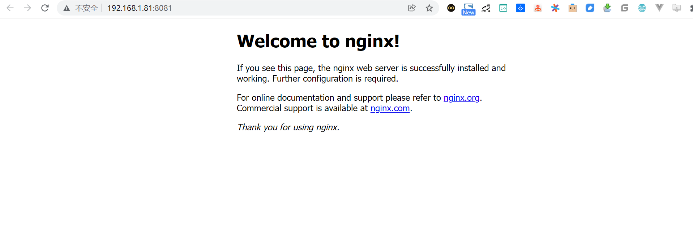
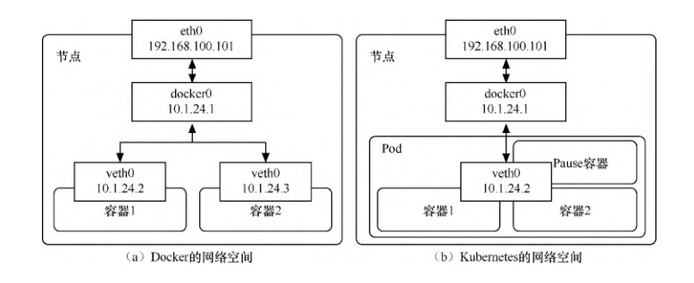
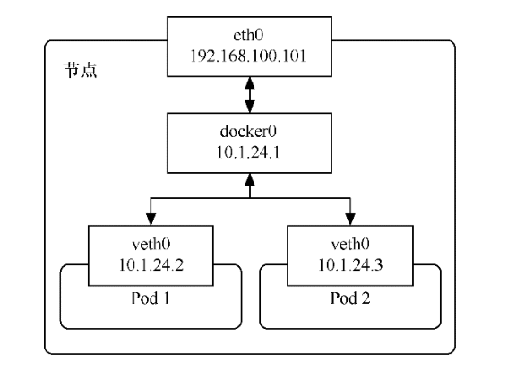
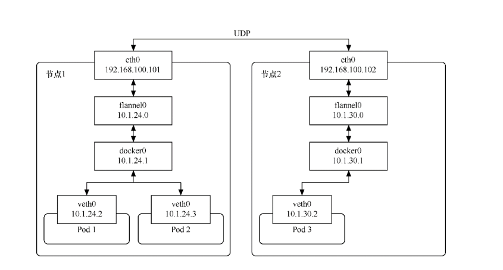
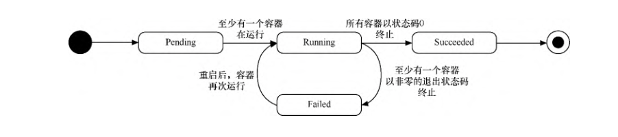
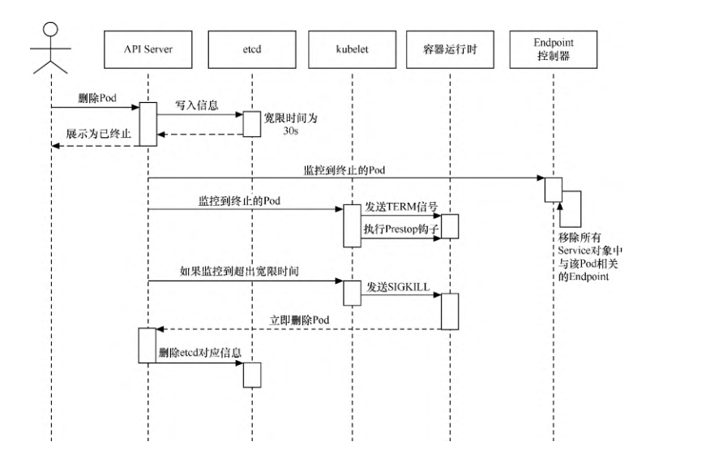
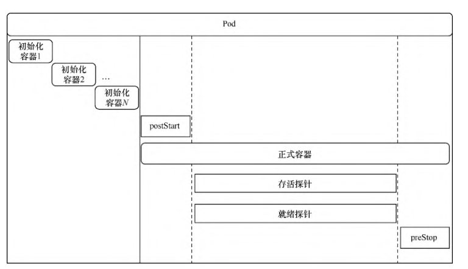
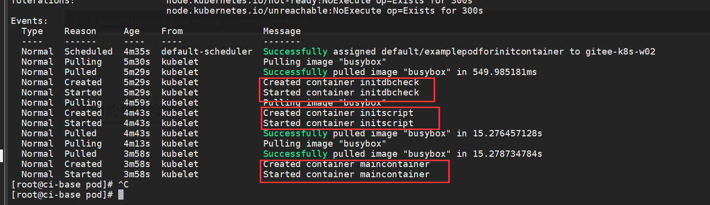
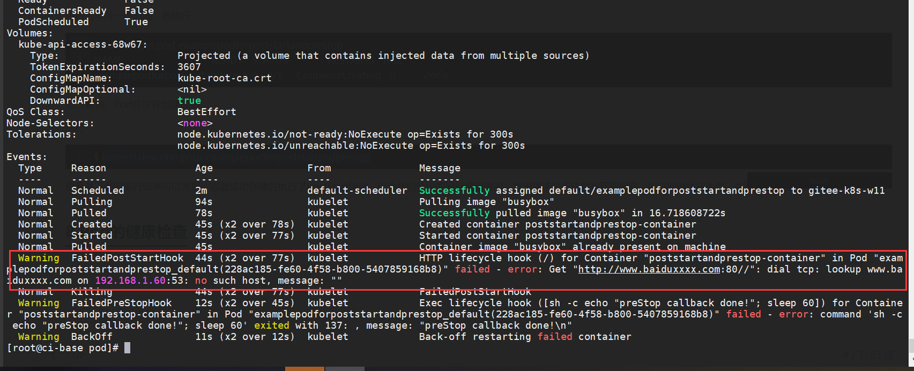
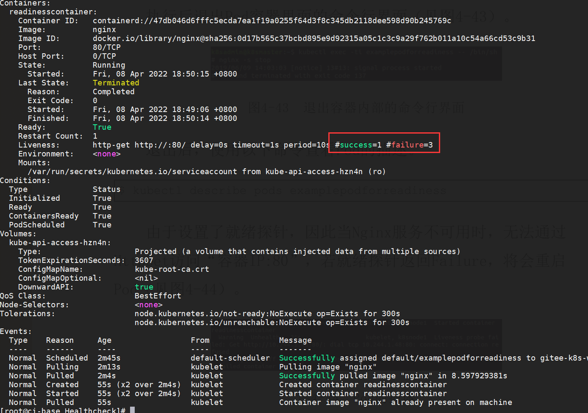

Contents
Pod的基本操作¶
1.创建Pod¶
examplepod.yml
apiVersion: v1
kind: Pod
metadata:
name: examplepod
spec:
containers:
- name: examplepod-container
image: busybox
imagePullPolicy: IfNotPresent
command: [ 'sh', '-c' ]
args: [ 'echo "Hello Kubernetes!"; sleep 3600' ]
apiVersion表示使用的API版本。
kind表示要创建的资源对象，这里使用关键字Pod。
metadata表示该资源对象的元数据。一个资源对象可拥有多个元数据，其中一项是name，它表示当前资源的名称。
spec表示该资源对象的具体设置。
name：要创建的容器名称。
image：容器的镜像地址。
imagePullPolicy：镜像的下载策略
imagePullPolicy，如下所示。
- Always：不管镜像是否存在都会进行一次拉取。
- Never：不管镜像是否存在都不会进行拉取。
- IfNotPresent：只有镜像不存在时，才会进行拉取
command：容器的启动命令列表（不配置的话，使用镜像内部的命令）。
args：启动参数列表（在本例中是输出文字“Hello Kubernetes!”并休眠3600s）
apply是一种声明式对象配置命令。这里应用了之前创建的模板，-f参数表示使用文件名作为参数。
kubectl apply -f examplepod.yml
如何在Kubernetes上保持容器运行？
容器应运而生。您需要为您的容器提供永远无法完成的任务。这样的事情应该起作用：
1.睡眠命令
apiVersion: v1
kind: Pod
metadata:
name: busybox
labels:
app: busybox
spec:
containers:
- name: busybox
image: busybox
ports:
- containerPort: 80
command: ["/bin/sh", "-ec", "sleep 1000"]
nodeSelector:
beta.kubernetes.io/os: linux
2.无限循环
apiVersion: v1
kind: Pod
metadata:
name: ubuntu
spec:
containers:
- name: ubuntu
image: ubuntu:latest
# Just spin & wait forever
command: [ "/bin/bash", "-c", "--" ]
args: [ "while true; do sleep 30; done;" ]
dockerfile的做法
在您的Dockerfile中，使用以下命令：
CMD ["sh", "-c", "tail -f /dev/null"]
构建您的docker映像。
将其推送到您的群集或类似的群集中，只是为了确保它可用。
kubectl run debug-container -it --image=<your-image>
2.查询Pod¶
$ kubectl get pod {Pod名称}
$ kubectl get pod {Pod名称} -w
$ kubectl get pod {Pod名称} -o wide
#查询Pod更详细的信息将其输出为yaml或json格式
$ kubectl get pod examplepod --output yaml
$ kubectl get pod examplepod --output json
# 根据selector便签进行查询
$ kubectl get pods --selector=example=exampleforservice
#使用describe命令查看详情
$ kubectl describe pods {Pod名称}
#如果要查询Pod本身输出的日志信息，还可以使用logs命令
$ kubectl logs {Pod名称}
# k get pod examplepod
NAME READY STATUS RESTARTS AGE
examplepod 1/1 Running 0 34s
3.修改Pod¶
$ kubectl replace -f {pod模板路径}
修改之前示例中定义的Pod，使它输出“Hello 2022!”
apiVersion: v1
kind: Pod
metadata:
name: examplepod
spec:
containers:
- name: examplepod-container
image: busybox
imagePullPolicy: IfNotPresent
command: [ 'sh', '-c' ]
args: [ 'echo "Hello 2022!"; sleep 3600' ]
提示：Pod有很多属性无法修改，比如containers的image属性，spec下的activeDeadline Seconds、tolerations属性等。
如果一定要修改，则需要加上–force参数，相当于重新创建Pod，命令如下。
$ kubectl replace -f {pod模板路径} --force
kubectl replace -f examplepod.yml --force
4.删除Pod¶
$ kubectl delete pod {Pod名称}
还可以基于模板文件删除资源
$ kubectl delete -f {模板文件名称}
5.Pod模板详解¶
实际生产环境中很少直接创建pod资源，基本都是通过资源控制器对pod进行管理。
yaml模板：
apiVersion: v1 #必填，版本号
kind: Pod #必填，资源类型
metadata: #必填，元数据
name: <name>-Depolyment #必填，资源名称
namespace: <namespace> #Pod所属的命名空间
labels: #自定义标签
- key: <value> #自定义标签名字<key: value>
annotations: #自定义注解列表
- name: <string> #自定义注解名字
spec: #必填，部署的详细定义
containers: #必填，定义容器列表
- name: <name> #必填，容器名称
image: <image-name> #必填，容器的镜像名称
imagePullPolicy: [Always | Never | IfNotPresent] #获取镜像的策略 Alawys表示下载镜像 IfnotPresent表示优先使用本地镜像，否则下载镜像，Nerver表示仅使用本地镜像
command: [array] #容器的启动命令列表，如不指定，使用打包时使用的启动命令
args: [string] #容器的启动命令参数列表
workingDir: string #选填，容器的工作目录
env: #容器运行前需设置的环境变量列表
- name: string #环境变量名称
value: string #环境变量的值
ports: #需要暴露的端口库号列表
- name: string #端口号名称
containerPort: int #容器需要监听的端口号
hostPort: int #容器所在主机需要监听的端口号，默认与Container相同
protocol: string #端口协议，支持TCP和UDP，默认TCP
resources: #建议填写，资源限制和请求的设置
limits: #资源限制的设置
cpu: string #Cpu的限制，单位为core数，将用于docker run --cpu-shares参数
memory: string #内存限制，单位可以为Mib/Gib，将用于docker run --memory参数
requests: #资源请求的设置
cpu: string #Cpu请求，容器启动的初始可用数量
memory: string #内存请求，容器启动的初始可用数量
volumeMounts: #挂载到容器内部的存储卷配置
- name: string #引用pod定义的共享存储卷的名称，需用volumes[]部分定义的的卷名
mountPath: string #存储卷在容器内mount的绝对路径，应少于512字符
readOnly: boolean #是否为只读模式
livenessProbe: #建议填写，对Pod内个容器健康检查的设置，当探测无响应几次后将自动重启该容器，检查方法有exec、httpGet和tcpSocket，对一个容器只需设置其中一种方法即可
exec: #对Pod容器内检查方式设置为exec方式
command: [string] #exec方式需要制定的命令或脚本
httpGet: #对Pod内个容器健康检查方法设置为HttpGet，需要制定Path、port
path: string
port: number
host: string
scheme: string
HttpHeaders:
- name: string
value: string
tcpSocket: #对Pod内个容器健康检查方式设置为tcpSocket方式
port: number
initialDelaySeconds: 0 #容器启动完成后首次探测的时间，单位为秒
timeoutSeconds: 0 #对容器健康检查探测等待响应的超时时间，单位秒，默认1秒
periodSeconds: 0 #对容器监控检查的定期探测时间设置，单位秒，默认10秒一次
successThreshold: 0 #处于失败状态时，探测操作至少连续多少次的成功才被认为是通过检测，显示为#success属性，默认值为1
failureThreshold: 0 #处于成功状态时，探测操作至少连续多少次的失败才被视为是检测不通过，显示为#failure属性，默认值为3
imagePullSecrets: #Pull镜像时使用的secret名称，以key：secretkey格式指定
- name: string
hostNetwork: false #是否使用主机网络模式，默认为false，如果设置为true，表示使用宿主机网络
volumes: #在该pod上定义共享存储卷列表
- name: string #共享存储卷名称 （volumes类型有很多种）
emptyDir: {} #类型为emtyDir的存储卷，与Pod同生命周期的一个临时目录。为空值
hostPath: string #类型为hostPath的存储卷，表示挂载Pod所在宿主机的目录
path: string #Pod所在宿主机的目录，将被用于同期中mount的目录
- name: string #共享存储卷名称
secret: #类型为secret的存储卷，挂载集群与定义的secre对象到容器内部
scretname: string
items:
- key: string #选择secrets定义的某个key
path: string #文件内容路径
- name: string #共享存储卷名称
configMap: #类型为configMap的存储卷，挂载预定义的configMap对象到容器内部
name: string
items:
- key: string #选择configmap定义的某个key
path: string #文件内容路径
- name: string #共享存储卷名称
persistentVolumeClaim:
claimName: string #类型为PVC的持久化存储卷
affinity: # 亲和调度
nodeAffinity: # 节点亲和调度
requiredDuringSchedulingIgnoredDuringExecution: #硬亲和调度 或preferredDuringSchedulingIgnoredDuringExecution 软亲和调度
nodeSelectorTerms: # 选择条件
- matchExpressions: # 匹配规则
- key: key
operator: In
values:
- values
nodeSelector: #设置NodeSelector表示将该Pod调度到包含这个label的node上
name: string #自定义标签名字<key: value>
restartPolicy: [Always | Never | OnFailure] #Pod的重启策略，Always表示一旦不管以何种方式终止运行，kubelet都将重启，OnFailure表示只有Pod以非0退出码退出才重启，Nerver表示不再重启该Pod
yaml示例：此处以最简单的busybox举例，添加容器启动命令参数
apiVersion: v1
kind: Pod
metadata:
name: busybox-pod
namespace: test
labels:
name: busybox-pod
spec:
containers:
- name: busybox
image: busybox:latest
imagePullPolicy: IfNotPresent
command: ["/bin/sh","-c","while true;do echo hello;sleep 1;done"]
restartPolicy: Always
可以使用kubectl explain pod命令详细查看Pod资源所支持的所有字段的详细说明,对于spec字段可以使用命令$
kubectl explain pod.spec进行查看
查看k8s资源对象字段对照表
$ kubectl explain deploy --recursive=true
$ kubectl explain pod --recursive=true
$ kubectl explain server --recursive=true
如果要了解一个正在运行的Pod的配置，可以通过以下命令来获取。
$ kubectl get pod {pod名称} -o yaml
6.Pod与容器¶
6.1 Pod创建容器的方式¶
examplepod.yml
apiVersion: v1
kind: Pod
metadata:
name: examplepod
spec:
containers:
- name: examplepod-container
image: busybox
imagePullPolicy: IfNotPresent
command: [ 'sh', '-c' ]
args: [ 'echo "Hello 2022!"; sleep 3600' ]
类似于docker上面执行了如下命令
$ docker run --name examplepod-container busybox sh -c 'echo "Hello Kubernetes!"; sleep 3600'
提示：command和args设置会分别覆盖原Docker镜像中定义的EntryPoint与CMD，在使用时请务必注意以下规则
如果没有在模板中提供command或args，则使用Docker镜像中定义的默认值运行。
如果在模板中提供了command，但未提供args，则仅使用提供的command。Docker镜像中定义的默认的EntryPoint和默认的命令都将被忽略。
如果只提供了args，则Docker镜像中定义的默认的EntryPoint将与所提供的args组合到一起运行。
如果同时提供了command和args，Docker镜像中定义的默认的EntryPoint和命令都将被忽略。所提供的command和args将会组合到一起运行。
1.volumeMounts配置信息¶
创建examplepodforvolumemount.yml文件.
examplepodforvolumemount.yml
apiVersion: v1
kind: Pod
metadata:
name: examplepodforvolumemount
spec:
containers:
- name: containerforwrite
image: busybox
imagePullPolicy: IfNotPresent
command: [ 'sh', '-c' ]
args: [ 'echo "test data!" > /write_dir/data; sleep 3600' ]
volumeMounts:
- name: filedata
mountPath: /write_dir
- name: containerforread
image: busybox
imagePullPolicy: IfNotPresent
command: [ 'sh', '-c' ]
args: [ 'cat /read_dir/data; sleep 3600' ]
volumeMounts:
- name: filedata
mountPath: /read_dir
volumes:
- name: filedata
emptyDir: { }
在本例中，我们创建了两个容器。一个是containerforwrite，它向数据卷写入数据，会向/write_dir/data文件写入“test data!”文本。
容器内的数据卷地址为/write_dir，它引用的存储卷为filedata
另一个容器是containerforread，TE会从/read_dir/data文件中读取文本，并将其输出到控制台（后续可以通过日志查询方式读取 输出到控制台的文本）。容器内的数据卷地址为/read_dir，它引用的存储卷为filedata。
执行以下命令，创建Pod。
$ kubectl apply -f examplepodforvolumemount.yml
通过以下命令，查看Pod的运行情况，READY 2/2表示两个容器都已成功运行。
$ kubectl get pod
NAME READY STATUS RESTARTS AGE
examplepodforvolumemount 2/2 Running 0 56s
$ kubectl get pods examplepodforvolumemount
此时可以通过logs命令，查看Pod中containerforread容器的日志。
$ kubectl logs examplepodforvolumemount containerforread
test data!
可以看到，containerforread容器已经读取到在containerforwrite容器中写入的文本，并已将其输出到控制台。
2.ports配置信息¶
容器运行时通常会提供一些机制以将容器端口暴露出来，并映射到主机的端口上，以便其他人能通过“主机IP:端口”访问容器所提供 的服务，例如，Docker的命令$ docker run -p {宿主机端口}:{容器端口} {镜像名称}。同样，Pod模板中也提供了这个功能。
examplepodforport.yml
apiVersion: v1
kind: Pod
metadata:
name: examplepodforport
spec:
containers:
- name: containerfornginx
image: nginx
imagePullPolicy: IfNotPresent
ports:
- name: portfoxnginx
containerPort: 80
hostPort: 8081
protocol: TCP
在本例中，Nginx镜像中默认定义的对外提供服务的端口为80。通过containerPort属性，我们将80端口暴露出来，
再通过hostPort属性将其映射到宿主机的端口8081上，以便通过“主机IP:端口”访问容器所提供的服务，其中protocol为端口协议，支持TCP和UDP，默认为TCP。
$ kubectl apply -f examplepodforport.yml
$ kubectl get pod examplepodforport
Pod创建完成后，执行以下命令，查看Pod具体被分配到哪台Node上。
$ kubectl describe pods examplepodforport
Name: examplepodforport
Namespace: default
Priority: 0
Node: gitee-k8s-w28/192.168.1.81
执行结果如上，可以看到Pod被部署在"Node：gitee-k8s-w28/192.168.1.81"上。
通过浏览器访问刚才查到的IP地址，加上之前设置的映射到宿主机的端口号（在本例中为http://192.168.1.81:8081）
则可以访问Nginx的欢迎页面
注意：以上案例仅为了说明Kubernetes是如何创建容器的，这种类似于Docker直接映射到主机端口的方式，在Kubernetes中强烈不推荐。
Pod只是一个运行服务的实例，随时可能在一个Node上停止，而在另一个Node上以新的IP地址启动新的Pod，因此它不能以稳定的IP地址 和端口号提供服务。若要稳定地提供服务，则需要服务发现和负载均衡能力。Kubernetes提供了Service抽象机制。
3.env配置信息¶
容器运行时通常还会提供一些机制来输入可动态配置的一些环境变量，以供容器中的应用程序使用。
如在Docker中，配置环境变量的命令为$ docker run –env {变量1}={值1} –env {变量2}={值2} … {镜像名称}。
同样，Pod模板中也提供了这个功能，为了通过例子进行演示
examplepodforenv.yml
apiVersion: v1
kind: Pod
metadata:
name: examplepodforenv
spec:
containers:
- name: containerforenv
image: busybox
imagePullPolicy: IfNotPresent
env:
- name: parameter1
value: "good morning!"
- name: parameter2
value: "good night!"
command: [ 'sh','-c' ]
args: [ 'echo "${parameter1} ${parameter2}"; sleep 3600' ]
在模板中定义了一个名为containerforenv的容器，向它传入了两个环境变量：
其中一个名为parameter1，值为good morning!；
另一个变量名为parameter2，值为good night!。
在本例中，将通过在容器中执行命令的方式，将传入的两个环境变量拼接到一起并输出到日志。
$ kubectl apply -f examplepodforenv.yml
$ kubectl get pods examplepodforenv
通过以下命令，查看Pod中输出的日志。
$ kubectl logs pod/examplepodforenv
good morning! good night!
可以看到两个环境变量的值成功拼接到一起并输出到日志中.
在Docker中，环境变量不仅可以明文配置，还可以通过读取某个文件的方式从其他来源获取。
而Kubernetes还支持更丰富的配置方式，这会在后续章节中详述。
6.2 Pod组织容器的方式¶
1.容器如何组成一个Pod¶
Pod只是一种抽象，并不是一个真正的物理实体，表示一组相关容器的逻辑划分。
每个Pod都包含一个或一组密切相关的业务容器，除此之外，每个Pod都还有一个称为“根容器”的特殊Pause容器
Pause容器其实属于Kubernetes的一部分。在一组容器作为一个单位的情况下，很难对整个容器组进行判断，如一个容器挂载了能代表 整个Pod都挂载了吗？
如果引入一个和业务无关的Pause容器，用它作为Pod的根容器，用它的状态代表整组容器的状态，便能解决该问题。
另外，Pod中的所有容器都共享Pause容器的IP地址及其挂载的存储卷，这样也简化了容器之间的通信和数据共享问题。
另外，Pause容器还在Pod中担任Linux命名空间共享的基础，为各个容器启用pid命名空间，开启init进程。
Pod中的容器可以使用Pod所提供的两种共享资源——存储和网络。
1）存储
在Pod中，可以指定一个或多个共享存储卷。Pod中的所有容器都可以访问共享存储卷，从而让这些容器共享数据。
存储卷也可以用来持久化Pod中的存储资源，以防容器重启后文件丢失。
2）网络
每个Pod都分配了唯一的IP地址。Pod中的每个容器都共享网络命名空间，包括IP地址和网络端口。
Pod内部的容器可以使用localhost互相通信。当Pod中的容器与Pod外部进行通信时，还必须共享网络资源（如使用端口映射）。
Docker和Kubernetes在网络空间上的差异。
要查看Pod的IP，可以使用以下命令。
$ kubectl get pod examplepodforenv --template={{.status.podIP}}
或者
$ kubectl get pod examplepodforenv -o wide
2.Pod之间如何通信¶
Pod之间的通信主要涉及两个方面
1.同一个Node上Pod之间的通信¶
每一个Pod都有一个全局IP地址，同一个Node内不同Pod之间可以直接采用对方Pod的IP地址通信，而且不需要使用其他发现机制。
因为它们都是通过veth连接在同一个docker0网桥上的，其IP地址都是从docker0网桥上动态获取的，并关联在同一个docker0网桥上，地址段也相同，所以它们之间能直接通信。
同一个Node上Pod之间的通信
2.跨Node的Pod之间的通信¶
要实现跨Node的Pod之间的通信，首先需要保证的是Pod的IP地址在所有Node上都是全局唯一的。
这其实并不复杂，因为Pod的IP地址是由Docker 网桥分配的，所以可以将不同Node机器上的Docker网桥配置成不同的IP网段来实现这个功能。 然后需要在容器集群中创建一个覆盖网络来连接各个机器。
目前可以通过第三方网络插件来覆盖网络，比如Flannel、Calico、Cilium。
Flannel会配置Docker网桥（即docker0），通过修改Docker的启动参数bip来实现这一点。通过这种方式，集群中各台机器的Docker网桥就得到了全局唯一的IP网段，它所创建的容器自然也拥有全局唯一的IP。
Flannel还会修改路由表，使Flannel虚拟网卡可以接管容器并跨主机通信。
当一个节点的容器访问另一个节点的容器时，源节点上的数据会从docker0网桥路由到flannel0网卡，在目的节点处会从flannel0网卡路由到docker0网桥，然后再转发给目标容器。
Flannel运行在所有的Node机器上，重新规划了容器集群的网络。 这既保证了容器的IP地址的全局唯一性，又让不同机器上的容器能通过内网IP地址互相通信。
当然，容器的IP地址并不是固定的，IP地址的分配还由Docker来负责，Flannel只分配子网段。
跨Node的Pod之间的通信
因为Pod的IP地址本身是虚拟IP，所以只有Kubernetes集群内部的机器（Master和Node）及其他Pod可以直接访问这个IP地址，集群之外的机器无法直接访问Pod的IP地址。
创建一个Nginx模板
apiVersion: v1
kind: Pod
metadata:
name: examplepodfornginx
spec:
containers:
- name: containerfornginx
image: nginx
imagePullPolicy: IfNotPresent
ports:
- name: portfoxnginx
containerPort: 80
protocol: TCP
该模板在执行之后，可以通过kubectl get pod -o wide命令查看Pod的虚拟IP地址
$ kubectl apply -f examplenginx.yml
$ kubectl get pod examplepodfornginx -o wide
NAME READY STATUS RESTARTS AGE IP NODE NOMINATED NODE READINESS GATES
examplepodfornginx 1/1 Running 0 2m25s 10.0.23.170 gitee-k8s-w28 <none> <none>
# node1节点
$ curl 10.0.23.170
<!DOCTYPE html>
<html>
<head>
<title>Welcome to nginx!</title>
......
集群内部的任何机器都可以直接访问Pod的IP地址及containerPort中暴露的端口，可以执行以下命令访问Pod提供的服务 （也可以使用浏览器来访问，但前提是浏览器所在主机必须是集群内的Master或Node）。
要使集群外的机器访问Pod提供的服务，之前介绍过可以使用hostPort属性将它映射到Node宿主机的端口上，然后通过http://{Node主机IP}:{主机端口}的方式来访问。
前面已经提到，这并不是推荐方式。在Kubernetes中可使用Service和Ingress来发布服务
7.Pod的生命周期¶
7.1 Pod的相位¶
Pending
Pod已被Kubernetes系统接受，但尚有一个或多个容器镜像未能创建。
比如，调度前消耗的运算时间，以及通过网络下载镜像所消耗的时间，这些准备时间都会导致容器镜像未创建
Running
Pod已绑定到Node，所有的容器均已创建。至少有一个容器还在运行，或者正在启动或重新启动
Succeeded
Pod中的所有容器都已成功终止，并且不会重新启动
Failed
Pod中的所有容器都已终止，并且至少有一个容器表现出失败的终止状态。也就是说，容器要么以非零状态退出，要么被系统终止
Unknown
由于某种原因，无法获得Pod的状态，这通常是Pod所在的宿主机通信出错而导致的
Pod相位的变更
如果进入了Failed状态，通常有以下3种原因。
Pod启动时，只要有一个容器运行失败，Pod将会从Pending状态进入Failed状态。
Pod正处于Running状态，若Pod中的一个容器突然损坏或在退出时状态码不为0，Pod将会从Running进入Failed状态。
在要求Pod正常关闭的时候，只要有一个容器退出的状态码不为0，Pod就会进入Failed状态。
7.2 Pod的重启策略¶
PodSpec中有一个名为restartPolicy的字段，字段值为Always、OnFailure和Never中的一个。
restartPolicy对Pod中的所有容器有效，由Pod所在Node上的kubelet执行判断和重启操作。
由kubelet重新启动的已退出容器将会以递增延迟的方式（10s，20s，40s，…）尝试重新启动，上限时间为5min，延时的累加值会在成功运行10min后重置。
一旦Pod绑定到某个节点上，就绝对不会重新绑定到另一个节点上。
restartPolicy字段的值
Always ：在容器失效时，立即重启
OnFailure：在容器终止运行且退出码不为0时重启
Never：不重启
重启策略对Pod状态的影响如下。
假设有1个运行中的Pod，它拥有1个容器。容器退出成功后， restartPolicy的不同设置的影响如下。 Always：重启容器，Pod相位仍为Running。 OnFailure：Pod相位变为Succeeded。 Never：Pod相位变为Succeeded。
假设有1个运行中的Pod，它拥有1个容器。容器退出失败后， restartPolicy的不同设置的影响如下。 Always：重启容器，Pod相位仍为Running。 OnFailure：重启容器，Pod相位仍为Running。 Never：Pod相位变为Failed。
假设有1个运行中的Pod，它拥有两个容器。第1个容器退出失败 后，restartPolicy的不同设置的影响如下。 Always：重启容器，Pod相位仍为Running。 OnFailure：重启容器，Pod相位仍为Running。 Never：不会重启容器，Pod相位仍为Succeeded。
假设第1个容器没有运行起来，而第2个容器也退出了，此时 restartPolicy的不同设置的影响如下。 Always：重启容器，Pod相位仍为Running。 OnFailure：重启容器，Pod相位仍为Running。 Never：Pod相位变为Failed。
假设有1个运行中的Pod，它拥有1个容器。容器发生内存溢出后， restartPolicy的不同设置的影响如下。 Always：重启容器，Pod相位仍为Running。 OnFailure：重启容器，Pod相位仍为Running。 Never：记录失败事件，Pod相位变为Failed。
7.3 Pod的创建与销毁过程¶
Pod的终止流程
删除操作的宽限时间默认为30s。kubectl
delete命令支持--grace-period={秒}选项，用户可以自定义宽限时间。
如果这个值设置为0，则表示强制删除Pod，但是在使用--grace-period=0时需要同时添加选项--force才能执行强制删除。
7.4 Pod的生命周期事件¶
在Pod的整个生命周期里，会经历两个大的阶段。第一个阶段是初始化容器运行阶段，第二个阶段是正式容器运行阶段。
每个大的阶段中都会有不同的生命周期事件。
1.初始化容器运行阶段¶
Pod中可以包含一个或多个初始化容器，它们是在应用程序容器正式运行之前而运行的专用容器（其中可以包含一些设定脚本或基础工具，它们主要负责初始化工作）。
初始化容器不能是长期运行的容器，而是在执行完一定操作后就必须结束的。
初始化容器不是同时运行的，而是按照既定顺序一个接一个地运行的。
在正式容器运行前，所有的初始化容器必须正常结束。
初始化容器的目的是将初始化逻辑与主体业务逻辑分离并放置在不同的镜像中。
初始化容器执行失败时，如果restartPolicy是OnFailure或者Always，那么会重复执行失败的初始化容器一直到成功；
如果restartPolicy是Never，则不会重启失败的初始化容器。
如果初始化容器执行成功，那么无论restartPolicy是什么，都不会再次重启。
初始化容器和正式容器能够定义的属性完全一样，但正式容器放在spec属性的containers下面，而初始化容器放在initContainers下面。
下面将用一个示例来说明初始化容器的使用方法。
假设要部署一个应用程序，但在部署前需要检查db是否就绪，并执行一些初始化脚本。
examplepodforinitcontainer.yml
apiVersion: v1
kind: Pod
metadata:
name: examplepodforinitcontainer
spec:
containers:
- name: maincontainer
image: busybox
command: ['sh', '-c']
args: ['echo "maincontainer is running!"; sleep 3600']
initContainers:
- name: initdbcheck
image: busybox
command: ['sh', '-c']
args: ['echo "checking db!"; sleep 30; echo "checking done!"']
- name: initscript
image: busybox
command: ['sh', '-c']
args: ['echo "init script exec!"; sleep 30; echo "init script exec done!"']
正式容器：
maincontainer
两个初始化容器：
initdbcheck：执行初始化db检查
initscript： 执行初始化脚本
创建Pod
$ kubectl apply -f examplepodforinitcontainer.yml
查看Pod的运行情况
$ kubectl get pods examplepodforinitcontainer
NAME READY STATUS RESTARTS AGE
examplepodforinitcontainer 0/1 Init:0/2 0 15
在30s内，因为还在执行第一个初始化容器，所以执行状态为Init:0/2
在30～60s时，执行第二个初始化容器，执行状态为Init:1/2
当所有初始化容器执行完时，容器就会先变为Pending，然后变为Running
同样，在不同的时间段执行logs命令，会得到不同的日志。
此时可使用如下命令查看容器的详细信息。
$ kubectl describe pods examplepodforinitcontainer
按照之前设定的顺序，先执行initdbcheck，再执行initscript，初始化容器执行完之后，才运行maincontainer。
下面的资源清单仅是一个初始化容器的使用示例，读者可自行创建并观察初始化容器的相关状态：
apiVersion: v1
kind: Pod
metadata:
name: myapp-pod
labels:
app: myapp
spec:
containers:
- name: myapp-container
image: ikubernetes/myapp:v1
initContainers:
- name: init-something
image: busybox
command: ['sh', '-c', 'sleep 10']
1.1 Init Container¶
Pod 能够具有多个容器，应用运行在容器里面，但是它也可能有一个或多个先于应用容器启动的 Init 容器。Init 容器在所有容器运行之前执行（run-to-completion），常用来初始化配置。
如果为一个 Pod 指定了多个 Init 容器，那些容器会按顺序一行。 当所有的 Init 容器运行完成时，Kubernetes 初始化 Pod 并像平常一样运行应用容器。
下面是一个 Init 容器的示例：
apiVersion: v1
kind: Pod
metadata:
name: init-demo
spec:
containers:
- name: nginx
image: nginx
ports:
- containerPort: 80
volumeMounts:
- name: workdir
mountPath: /usr/share/nginx/html
# These containers are run during pod initialization
initContainers:
- name: install
image: busybox
command:
- wget
- "-O"
- "/work-dir/index.html"
- http://kubernetes.io
volumeMounts:
- name: workdir
mountPath: "/work-dir"
dnsPolicy: Default
volumes:
- name: workdir
emptyDir: {}
它们可以包含并运行实用工具，出于安全考虑，是不建议在应用容器镜像中包含这些实用工具的。
它们可以包含使用工具和定制化代码来安装，但是不能出现在应用镜像中。例如，创建镜像没必要 FROM 另一个镜像，只需要在安装过程中使用类似 sed、 awk、 python 或 dig 这样的工具。
应用镜像可以分离出创建和部署的角色，而没有必要联合它们构建一个单独的镜像。
它们使用 Linux Namespace，所以对应用容器具有不同的文件系统视图。因此，它们能够具有访问 Secret 的权限，而应用容器不能够访问。
它们在应用容器启动之前运行完成，然而应用容器并行运行，所以 Init 容器提供了一种简单的方式来阻塞或延迟应用容器的启动，直到满足了一组先决条件。
Init 容器的资源计算，选择一下两者的较大值：
所有 Init 容器中的资源使用的最大值
Pod 中所有容器资源使用的总和
Init 容器的重启策略：
如果 Init 容器执行失败，Pod 设置的 restartPolicy 为 Never，则 pod 将处于 fail 状态。否则 Pod 将一直重新执行每一个 Init 容器直到所有的 Init 容器都成功。
如果 Pod 异常退出，重新拉取 Pod 后，Init 容器也会被重新执行。所以在 Init 容器中执行的任务，需要保证是幂等的。
1.2 初始化容器常见案例¶
在 mountOptions 中设置 uid 和 gid
时失败，有时候需要设置挂载时候目录的属主和属组权限，默认持久存储卷挂载、或者cm进行挂载的权限为root:root且只读。这时候可以通过initcontainer容器进行权限修改。
可以通过执行以下操作之一来缓解此问题
通过在 fsGroup 中的 runAsUser 和 gid 中设置 uid 来配置 pod 的安全上下文。例如，以下设置会将 pod 设置为 root，使其可供任何文件访问：
apiVersion: v1
kind: Pod
metadata:
name: security-context-demo
spec:
securityContext:
runAsUser: 0
fsGroup: 0
备注: 因为 gid 和 uid 默认装载为 root 或0。如果 gid 或 uid 设置为非根（例如1000），则 Kubernetes 将使用
chown更改该磁盘下的所有目录和文件。此操作可能非常耗时，并且可能会导致装载磁盘的速度非常慢。
使用 initContainers 中的
chown设置 gid 和 uid。例如:
initContainers:
- name: volume-mount
image: busybox
command: ["sh", "-c", "chown -R 100:100 /data"]
volumeMounts:
- name: <your data volume>
mountPath: /data
2.正式容器运行阶段¶
初始化容器运行完成后，就会开始启动正式容器。在正式容器运行期间，都会有与之对应的生命周期事件。
在正式容器刚刚创建成功之后，就会触发PostStart事件。而在整个容器持续运行的过程中，可以设置存活探针（liveness probe）和 就绪探针（readiness probe）来持续检查容器的健康状况。
而在容器结束前，会触发PreStop事件。
如果要在容器创建后或停止前执行某些操作，则可以注册以下两个事件的回调。
PostStart：容器刚刚创建成功后，触发事件，执行回调。如果回调中的操作执行失败，则该容器会被终止，并根据该容器的重启策略决定是否要重启该容器。
PreStop：容器开始和结束前，触发事件，执行回调。无论回调执行结果如何，都会结束容器。
回调的实现方式有两种（一种是Exec，一种是HttpGet）
Exec
postStart或preStop:
exec:
command: [String] #命令列表
HttpGet
postStart或preStop:
httpGet:
host: String #请求的IP地址或域名
port: Number #请求的端口号
path: String #请求的路径（例如，www.baidu.com/tieba，"/tieba"就是路径）
scheme: String #请求的协议，默认是为HTTP
演示使用PostStart事件和PreStop事件
examplepodforpoststartandprestop.yml
apiVersion: v1
kind: Pod
metadata:
name: examplepodforpoststartandprestop
spec:
containers:
- name: poststartandprestop-container
image: busybox
imagePullPolicy: IfNotPresent
command: ['sh', '-c']
args: ['echo "Hello Kubernetes!"; sleep 3600']
lifecycle:
postStart:
httpGet:
host: www.baidu.com
path: /
port: 80
scheme: HTTP
preStop:
exec:
command: ['sh', '-c', 'echo "preStop callback done!"; sleep 60']
在这个例子中，我们用postStart事件执行HttpGet回调，回调请求baidu页面，preStop则执行命令并输出一段文本，之后停留60s。
如果执行上面的Pod模板，Pod会创建成功。但现在我们先来做一些实验，修改Pod模板，将postStart事件的baidu网址故意改错，如下所示。
apiVersion: v1
kind: Pod
metadata:
name: examplepodforpoststartandprestop
spec:
containers:
- name: poststartandprestop-container
image: busybox
imagePullPolicy: IfNotPresent
command: ['sh', '-c']
args: ['echo "Hello Kubernetes!"; sleep 3600']
lifecycle:
postStart:
httpGet:
host: www.baiduxxxx.com
path: /
port: 80
scheme: HTTP
preStop:
exec:
command: ['sh', '-c', 'echo "preStop callback done!"; sleep 60']
$ kubectl apply -f examplepodforpoststartandprestop.yml
执行后等待一段时间，再执行
$ kubectl get pod examplepodforpoststartandprestop
NAME READY STATUS RESTARTS AGE
examplepodforpoststartandprestop 0/1 ContainerCreating 0 2m5s
可以看到，Pod并没有创建成功
执行
$ kubectl describe pods examplepodforpoststartandprestop
查看最下面的运行结果可以发现，容器成功创建后执行了postStart回调，因为我们给出的网址是错误的，发出请求后无法顺利获取响应，所以回调执行失败，失败后容器被终止。
删除刚才创建的Pod
# 默认宽限时间默认为30s
$ kubectl delete pod examplepodforpoststartandprestop
# 强制快速删除
$ kubectl delete pod examplepodforpoststartandprestop --grace-period=0 --force
将postStart事件的网址改回正确网址.Pod将会正常创建。
8.Pod的健康检查¶
在容器运行期间，可以设置两种探针来持续检查容器的健康状况。
存活探针（liveness probe）：测定容器是否正在运行。如果存活探针返回Failure，kubelet会终止容器，然后容器会遵循其重启策略。如果没有给容器提供存活探针，默认状态就是Success。
就绪探针（readiness probe）：测定容器是否已准备好为请求提供服务。如果就绪探针返回Failure，Endpoint控制器会从所有Service的Endpoint中移除此Pod的IP地址。在初始等待探测时间（即容器启动之后并在第一次探测之前的时间间隔）之内，默认的就绪状态是Failure。如果没有给容器提供就绪探针，默认状态为Success。
每个探针都会返回以下3种结果之一。
Success：容器通过诊断。
Failure：容器没有通过诊断。
Unknown：诊断失败，不会采取任何措施。
诊断是如何执行的呢？kubelet会调用容器配置中定义的测定方案来执行诊断，一共有3种测定方案。
ExecAction：在容器内部执行指定的命令。如果命令以状态码“0”退出，则测定为诊断成功。其配置方式如下。
livenessProbe或readinessProbe:
exec:
command: [String] #命令列表
TCPSocketAction：对容器IP地址的指定端口执行TCP检测。如果端口是打开的，则测定为诊断成功。其配置方式如下。
livenessProbe或readinessProbe:
tcpSocket:
port: Number #指定的端口号
HTTPGetAction：对容器IP地址的指定端口和路径执行HttpGet请求。如果响应的状态码范围为200～400，则测定为诊断成功。其配置方式如下。
livenessProbe或readinessProbe:
httpGet:
port: Number #指定的端口号
path: String #指定的路径（例如，www.baidu.com/tieba，"/tieba"就是路径）
示例
1.存活探针的使用¶
示例1：使用存活探针，方案为ExecAction。
examplepodforliveness.yml
apiVersion: v1
kind: Pod
metadata:
name: examplepodforliveness
spec:
containers:
- name: livenesscontainer
image: busybox
imagePullPolicy: IfNotPresent
command: ['sh','-c']
args: ['mkdir /files_dir; echo "important data" > /files_dir/importantfile; sleep 3600']
livenessProbe:
exec:
command: ['cat','/files_dir/importantfile']
$ kubectl apply -f examplepodforliveness.yml
接下来，通过kubectl get pods命令查看Pod的运行情况，直到状态变为Running
$ kubectl get pod
NAME READY STATUS RESTARTS AGE
examplepodforliveness 1/1 Running 0 54s
目前来说一切正常，现在我们来做一些破坏性操作。执行以下命令直接进入Pod内部，这相当于进入Pod容器里面的CMD界面。
$ kubectl exec -it pod/examplepodforliveness -- sh
/ # rm -f /files_dir/importantfile
由于探针定期检测/files_dir/importantfile文件是否存在，因此存活探针会返回Failure，可以使用以下命令查看Pod描述。
$ kubectl describe pods examplepodforliveness
稍等一会儿，通过$ kubectl get pods命令查看Pod的运行情况，可以看到Pod已经重启过一次
$ kubectl get pod
NAME READY STATUS RESTARTS AGE
examplepodforliveness 1/1 Running 1 2m52s
2.就绪探针的使用¶
示例2：使用就绪探针，方案为HTTPGetAction。
examplepodforreadiness.yml
apiVersion: v1
kind: Pod
metadata:
name: examplepodforreadiness
spec:
containers:
- name: readinesscontainer
image: nginx
imagePullPolicy: IfNotPresent
ports:
- name: portfoxnginx
containerPort: 80
livenessProbe:
httpGet:
port: 80
path: /
我们创建了一个Nginx容器，Nginx镜像中默认定义的对外提供服务的端口为80，通过containerPort属性，我们将80端口暴露出来。
然后，为该容器设置的一个就绪探测会定期向“容器IP:80”发送HttpGet请求，检测响应范围是否为200～400。
$ kubectl apply -f examplepodforreadiness.yml
接下来，通过kubectl get pods命令，查看Pod的运行情况，直到状态变为Running
$ kubectl exec -ti examplepodforreadiness -- /bin/sh
接下来，执行以下命令，直接将Nginx服务强制停止。
$ nginx -s stop
执行后退出Pod容器里面的命令行界面
退出后，使用以下命令查看Pod的描述。
$ kubectl describe pods examplepodforreadiness
由于设置了就绪探针，因此当Nginx服务不可用时，无法通过HttpGet访问“容器IP:80”，若就绪探针返回Failure，将会重启Pod。
通过kubectl get pods命令，查看Pod的运行情况，可以看到Pod已经重启过一次
$ kubectl get pod
NAME READY STATUS RESTARTS AGE
examplepodforreadiness 1/1 Running 1 3m26s
存活探针和就绪探针在使用上有什么区别呢？哪种情况下该使用存活探针，哪种情况下该使用就绪探针呢？这里给出的建议如下。
如果容器中的进程能够在遇到问题或不健康的情况下自行崩溃，则不一定需要存活探针，kubelet会根据Pod的重启策略自动执行正确的操作。
如果想在探针测试失败时终止并重启容器，则可以指定存活探针，并将重启策略设置为Always或OnFailure。
如果容器需要在启动期间处理大型数据、配置文件或迁移，请指定就绪探针。
如果希望容器能够自己停机进行维护，则可以指定就绪探针，用它去检查与存活探针不同的端点。
如果只想在探针成功时才对Pod发送网络流量，则可以指定就绪探针。在这种情况下，就绪探针和存活探针看似相差不大，但就绪探针的存在意味着Pod将在不会接收到任何网络流量的情况下启动。只有在探针开始成功时，才会开始接收流量。
如果只希望在删除Pod时排除请求，则不必使用就绪探针。无论有没有就绪探针，Pod在删除时都会自动将自己设置成未就绪状态。在等待Pod中的容器完全停止的时候，Pod已处于未就绪状态。
对于每种探针，还可以设置5个参数，它们分别如下。
initialDelaySeconds：启动容器后首次监控检查的等待时间，单位为秒。
timeoutSeconds：发送健康检查请求后等待响应的超时时间，单位为秒。当发生超时就认为探测失败。timeoutSeconds的默认值为10s，最小值为1s。
periodSeconds：探针的执行周期。默认10s执行一次，最小值为1s。
successThreshold：如果出现失败，则需要连续探测成功多次才能测定为诊断成功。successThreshold的默认值和最小值都是1。
failureThreshold：如果出现测定失败，则要连续失败多次才重启Pod（对于存活探针）或标记为Unready（对于就绪探针）。failureThreshold的默认值为3，最小值为1。
具体设置方法如下。
livenessProbe或readinessProbe:
exec或tcpSocket或httpGet:
initialDelaySeconds: Number
initialDelaySeconds: Number
periodSeconds: Number
successThreshold: Number
failureThreshold: Number